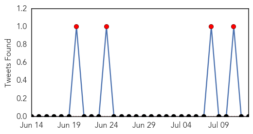
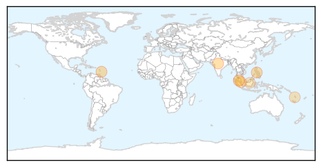
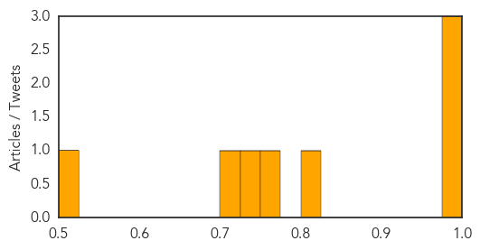
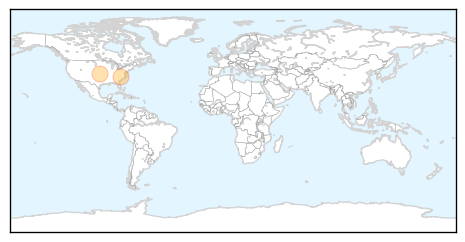

Dengue Fever
30-Day Web Trend
4 alerts, 5 warnings
30-Day Twitter Trend
4 alerts, 0 warnings

Article Locations
Article Confidences
Top Articles:
- 0.991
- Sharp rise in dengue fever cases
- 0.982
- Spurt in dengue cases in city as six more stung
- 0.981
- Sanofi dengue vaccine 89 percent effective on hemorrhagic fever
- 0.804
- Pacific health problems worsening
- 0.774
- Dengue shot offers some protection in trial
- 0.735
- Study: Promising dengue vaccine against haemorrhagic fever
- 0.722
- Study on dengue vaccine against haemorrhagic fever shows promising results – BorneoPost Online
- 0.507
- New Dengue Vaccine Still Under Evaluation, Says Subra
Top Tweets:
-
No tweets found for Jul 13, 2014
Chikungunya
30-Day Web Trend
3 alerts, 0 warnings
30-Day Twitter Trend
1 alerts, 0 warnings

Article Locations
Article Confidences

Top Articles:
Top Tweets:
-
No tweets found for Jul 13, 2014